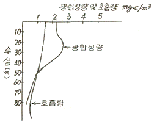

해양환경기사 (2006-05-14 기출문제)
1과목: 해양학개론
1. 심해파에 대한 설명 중 맞는 것은?
- 심해파의 파속은 수심, 파장 그리고 주기의 함수이다.
- 심해파의 파속은 제곱에 반비례한다.
- 심해파의 파속은 파장과는 관계가 없고 수심만의 함수이다.
- 수심이 파장의 1/2보다 깊다면 심해파이다.
(정답률: 89%)

2. 2층 해양의 경우 상층에서 시계방향의 회전흐름이 있고, 저층에서 유속이 없다면, 등압면과 두층사이 경계면의 형태는 중심부에서 외부로 향하여 어떻게 나타나는가?
- 등압면은 상승하고 경계면은 하강한다.
- 등압면과 경계면 모두 상승
- 등압면은 하강하고 경계면은 상승
- 등압면과 경계면 모두 하강
(정답률: 62%)
3. 반일주조의 주석조기가 정확히 12시간이 아닌 이유는?
- 지구의 자전때문
- 지구의 공전때문
- 달의 공전때문
- 태양의 공전때문
(정답률: 79%)
4. 지진파 중 P파 전달속도를 결정하는 계수로 가장 거리가 먼 것은?
- 밀도(density)
- 벌크 모듈러스(bulk modulus)
- 쉬어 모듈러스(shear modulus)
- 공극율(porosity)
(정답률: 85%)
5. 서태평양의 열대해역에서 발생하는 시속 119km이상의 열대성 저기압은?
- 태풍
- 돌풍
- 허리케인
- 사이클론
(정답률: 85%)
6. 다음 중 자기층서(magnetostratigraphy)의 문제점이 될 수 없는 것은?
- 생물교란
- 약한 가기강도
- 부정합의 존재
- 지자기의 반전
(정답률: 57%)
7. 에크만 수심에 대한 취송류 모델에서 고려하는 힘은?
- 바람의 응력, 해수의 점성, 대기압력
- 해저 마찰력, 해수의 점성, 코리올리 효과
- 마찰력, 중력, 코리올리 효과, 해수의 점성
- 바람의 마찰력, 해수의 점성, 코리올리 효과
(정답률: 85%)
8. 다음 중 지형류를 계산할 때 필요치 않은 것은?
- 밀도분포
- 정점간 거리
- 기준면
- 풍속
(정답률: 68%)
9. 다음 중 해수 온도차 발전(OTEC)의 후보지로서 가장 적합한 곳은?
- 울릉도
- 하와이
- 남극부근
- 그리인란드
(정답률: 87%)
10. 수중 통신에 가장 많이 쓰이는 것은?
- 초단전파
- 광파
- 음파
- 유선통신
(정답률: 92%)
11. 해수가 증발할 때, 염분이 증가함에 E따라 화합물은 일련의 과정으로 침전한다. 그 중 처 번째 침전물은?
- 돌로마이트(dolomite)
- 황산칼슘
- 탄산칼슘
- 석고
(정답률: 78%)
12. 해양에서 탄삼염 퇴적물이 가장 많이 퇴적되어 있는 곳은?
- 대양저 산맥
- 해구
- 북태평양 수렴대
- 후열도 분지
(정답률: 58%)
13. 대양의 경우 해표면 염분이 최대인 해역은?
- 적도부근
- 위도 20° 부근
- 위도 50° 부근
- 극지방
(정답률: 60%)
14. 심해저 망간단괴를 최초로 발견한 해양 탐사선은?
- H. M. S. 챌린저호
- 메테오호
- 클로마챌린저호
- 아르빈호
(정답률: 91%)
15. 대양에서 영구수온약층(permanent thermocline)이 가장 깊은 수심에서 나타나는 해역은?
- 적도부근
- 위도 20° 부근
- 위도 40° 부근
- 극지방
(정답률: 76%)
16. 다음 중 열수활동과 직접 관계가 없는 것은?
- 다금속 펄
- 해록석
- 블랙 스모커
- 화이트 스모커
(정답률: 80%)
17. 다음 중 영양염의 함유량이 가장 낮은 지역은?
- 발산지역
- 중위도 지역의 서쪽연안
- 적도반류역의 용승역
- 수렴지역
(정답률: 63%)
18. 다음 중 후열도 분지(backarc basin)에 해당하는 것은?
- 북극해
- 동해
- 황해
- 지중해
(정답률: 76%)
19. 다음 중 망간단괴의 품위를 결정하는 원소가 아닌 것은?
- 철
- 구리
- 니켈
- 코발트
(정답률: 75%)
20. 우리나라 근해에서 가장 풍부한 점토 광물은?
- Kaolinite
- Chlorite
- Smectite
- illite
(정답률: 89%)
2과목: 해양생태학
21. 다음 그림은 수심에 따른 광합성량과 호흡량의 변화곡선이다. 보상점(Compensation point)의 수심은?

- 20m
- 30m
- 50m
- 80m
(정답률: 86%)
22. 일반적으로 조간대 상부에 살고 있지 않은 조류는?
- 돌김
- 미역
- 불등가사리
- 매생이
(정답률: 62%)
23. PSP(Paralytic Shellfish Posion, 마비성패독류)의 주된 원인 생물은?
- 남조류
- 규조류
- 와편모조류
- 갈조류
(정답률: 82%)
24. 갯벌에 서식하는 이매패류에 대한 설명으로 맞는 것은?
- 환경의 교란과 강한 스트레스 때문에 성장기간이 짧다.
- 생물량에 대한 생산량의 비가 크다.
- 크기에 비해 낮은 서식밀도와 생물량을 나타낸다.
- 퇴적물과 수(水)의 경계면에서 물질수송을 담당한다.
(정답률: 86%)
25. 다음 중 엘니뇨 현상의 설명으로 틀린 것은?
- 페루연안의 차가운 해수가 따뜻한 적도 해수로 교체된다.
- 남반부 편서풍이 매우 강하여 페루 연안 용승이 증가한다.
- 멸치, 정어리 등의 어획 생산량이 감소한다.
- 해수 중의 산소량이 감소하고, 황화수소의 생성이 증가한다.
(정답률: 62%)
26. 해양저서동물과 분류상의 위치를 열거한 것 중 틀리게 열결된 것은?
- 다모환충류 - 갯지렁이
- 연체동물 - 따개비
- 극피동물 - 성게
- 절지동물 - 바다가재
(정답률: 84%)
27. 다음 해양생물들 가운데 조직의 분화정도가 가장 하등한 것은?
- 편형동물
- 해면동물
- 자포동물
- 선형동물
(정답률: 85%)
28. 최근 새로운 오염물질로 등장한 유기주석(TBT)이 해양생물체에 미치는 영향이 아닌 것은?
- 복족류의 임포섹스 유발
- 굴 패각의 기형화
- 바다새의 칼슘대사 저해로 부화율 저하
- 양식굴의 유생채묘 감소
(정답률: 65%)
29. 식물플랑크톤의 대증식이 일어날 수 없는 조건은?
- 영양염 공급이 충분하다.
- 수괴의 혼합이 보상깊이 위에서 일어난다.
- 수괴의 혼합이 임계깊이에서 일어난다.
- 광이 충분해야 한다.
(정답률: 74%)
30. 연체 동물의 특징이 아닌 것은?
- 머리, 발, 내장낭, 외투막으로 구분
- 부속지나 강모를 가진다.
- 중장선이 있어서 소화를 돕는다.
- 내장이 꼬인 종류도 있다.
(정답률: 72%)
31. 하구역에 서식하는 대형저서동물의 직접적인 영양원으로 가장 중요한 것은?
- 미량금속
- 유기쇄설입자
- 식물플랑크톤
- 용존유기물
(정답률: 78%)
32. 암반 조간대 생물군집의 대상분포(zonation)를 결정하는 주 요인으로 고려되는 사항 중 가장 거리가 먼 것은?
- 광도
- 산소
- 경쟁
- 건조
(정답률: 72%)
33. 저서동물을 채집하는 채집기 가운데 모래와 자갈이 함유되어 있어 입도가 조립한 해역이나, 심해와 같이 한번 내려 반드시 퍼올려야 할 경우에 주로 사용되는 장비로, 채집기 전체에 틀을 씌어 안정되도록 만든 것은?
- 드렛지
- 스미스 맥인타이어 채니기
- 반빈 채니기
- 에크만 비르게 채니기
(정답률: 56%)
34. 해양 미생물의 주요 영양원이 아닌 것은?
- 입자성 고형 무기물
- 용존 무기물
- 용존 영양염
- 유리질소분
(정답률: 60%)
35. 해양의 생태환경을 외양역, 연안역, 용승해역으로 구분 할 경우, 용승해역의 생태계 특성을 올바르게 설명한 것은?
- 영양단계의 수가 4~6으로 많고, 생태계수는 약 10% 정도이다.
- 영양단계의 수가 3~5정도이고, 생태계수는 약 15% 정도이다.
- 영양단계의 수가 1이고, 생태계수는 약 30% 정도이다.
- 영양단계의 수가 2~3으로 적고, 생태계수는 약 20% 정도이다.
(정답률: 82%)
36. 온대수역에서 저서동물의 부유유생 특징이 아닌 것은?
- 플랑크톤식자이다.
- 게절적 특성이 강하다.
- 알은 크고 소량 생산한다.
- 짧은 유생 시기를 갖는다.
(정답률: 72%)
37. 중형저서생물이 퇴적물 내, 즉 모래입자나 펄입자 사이의 좁은 공간에 적응하기 위한 것이 아닌 것은?
- 크기가 소형화 된다.(Miniaturization)
- 생김새가 가늘고 길다.(Elongation)
- 몸이 유연성이 있다.(Flexibility)
- 유영능력을 가진다.(Swimming)
(정답률: 86%)
38. 오염해역의 지표종으로서 가장 잘 알려져 있는 저서생물종은?
- Nereis grudei
- Capitella capitata
- Nephtys ciliata
- Glycera chirori
(정답률: 87%)
39. 배 밑에 부착하여 문제를 일으키는 동물이 아닌 것은?
- 멍게류
- 담치류
- 따개비류
- 십각류
(정답률: 71%)
40. 해양에서 서식하는 플랑크톤 중 크기가 가장 큰 것은?
- 편모조류
- 요각류
- 곤쟁이류
- 해파리
(정답률: 77%)
3과목: 해양계측학
41. 음파식(acoustic)해류계는 주로 어느 효과를 이용하는가?
- 감쇄효과
- 굴절효과
- 회절효과
- 도플러효과
(정답률: 80%)
42. 조석 관측의 목적으로 적당하지 않은 것은?
- 수질 측정 및 보정
- 각종 해면의 결정
- 교량 및 항만의 설계시공
- 수심측량
(정답률: 77%)
43. 외양역에서 영얌염류의 농도를 비교한 것 중 옳은 것은?
- 표층 ＜ 중층 ＜ 저층
- 표층 ＞중층 ＞저층
- 중층 ＜ 표층 ＜ 저층
- 중층 ＞표층 ＞저층
(정답률: 70%)
44. 플랑크톤 채집시 무망 시험을 하는 가장 큰 이유는?
- 대형플랑크톤의 채집량을 계산하기위해서
- 소형플랑크톤의 채집량을 계산하기위해서
- 미세플랑크톤의 혼합량을 계산하기위해서
- 플랑크톤 채집망의 여수율을 계산하기위해서
(정답률: 78%)
45. 다음 중에서 중력식 코아러는?
- Phleger 코아라
- Kullenberg 코아라
- Ewing 코아라
- Hydro-plastic 코아라
(정답률: 71%)
46. 다음 BT사용시 최대 가능 선속은?
- 12 노트
- 15 노트
- 18 노트
- 20 노트
(정답률: 70%)
47. 조석자료를 조화분석한 후, 조화분석에서 얻어진 조화상수로 관측과 같은 기간의 조석을 다시 추산하여 이를 관측치로부터 뺀 값을 일반적으로 무엇이라 하는가?
- 나머지
- 조석잔차
- 오차
- 상대편차
(정답률: 81%)
48. 1983년 1월 1일 ~ 1월 30일 간 관측된 지세포의 평균해면이 82.5cm, 인근 표준항 부산의 평균해면이 62.0cm였다면 지세포의 보정된 년 평균해면은 얼마인가?
- 84.5 ㎝
- 80.5 ㎝
- 83.5 ㎝
- 81.5 ㎝
(정답률: 68%)
49. 다음 중 염분을 측정하는데 있어서 이용될 수 없는 것은?
- 해수의 혼탁도
- 수중 음향속도
- 전기전도도
- 염소량
(정답률: 75%)
50. 위성 탑재 센서로서 해면 고도를 측정하는 것은?
- AVHRR
- ALTIMETER
- TM
- CZC.S
(정답률: 57%)
51. 다음 유속계 중에서 성격이 다른 것은?
- ARGOS Drifter Buoy
- Ekman 유속계
- VACM
- Aanderra 유속계
(정답률: 69%)
52. 해저의 저질(低質)을 채취하기 위한 장비가 아닌 것은?
- Dredge
- Piston corer
- Grab sampler
- Pinger
(정답률: 85%)
53. 퇴적물에 포함된 유기물이나 석회질을 제거하는 방법 중 틀린 것은?
- 저열 Oven(Sand oven)에서 가열하면서 H2O2용액과 몇 방울의 암모니아수를 가하여 유기물을 제거한다
- 시료에 유기물이 많이 포함되어 있으면 H2O2용액과 암모니아수 반응이 격렬하며 이때는 염산을 조금씩 가하여 조절한다.
- 석회질은 염산용액(약 30%)을 가하여 제거시킨다
- 광물학적 분석을 병행할 경우의 석회질 제거는 약한 염산액(약 10%)을 사용하여 pH가 3이하로 내려가지 않도록 한다
(정답률: 75%)
54. 퇴적물 식별에 이용되는 음파탐사법 중 해저 아래 수백 m까지 탐사하는데 적용되는 주파수는?
- 5㎑
- 1㎑ 전후
- 수백 ㎐
- 수십 ㎐
(정답률: 82%)
55. 퇴적물의 세립질 시료의 입도분석 방법으로 가장 올바른 것은?
- 원심분리기로 분리하여 입도 분석한다.
- 기계식 요동기에 의한 체질로 입도 분석한다
- Stokes 법칙을 이용하여 침전속도로부터 입도 분포를 구한다.
- 공기 흡입을 이용하여 입도를 분석한다.
(정답률: 74%)
56. 해수 표면의 수온 분포 측정에 가장 많이 사용되는 전자파는?
- X선
- 자외선
- 가시광선
- 적외선
(정답률: 75%)
57. 다음 중 형광분광계의 광원으로 사용되는 것은?
- 크세논 아아크
- 속이 빈 음극관
- Nerst 백열등
- Coolidge 관
(정답률: 64%)
58. 원격탐사에서 식물플랑크톤 연구에 많이 이용되는 전파는?
- X선
- 가시광선
- 마이크로파
- 라디오파
(정답률: 52%)
59. 기압의 변화에 따라 해면의 수위가 변동한다. 해면상의 기압이 1hPa 증가할 때 해면 수위의 변동은?
- 약 1㎝ 하강
- 약 1㎜ 하강
- 약 1㎝ 상승
- 약 1㎜ 상승
(정답률: 77%)
60. 육상 혹은 해상에서 위치를 측정하는 바업 중 위성을 이용하는 방법은?
- Loran
- Radar
- Trisponder
- GPS
(정답률: 82%)
4과목: 해수의 수질분석
61. 해수의 미량금속시료를 채취하는데 가장 적당한 채수기는?
- 반 돈(van Dorn) 채수기
- 고 플로(Go-Flow) 채수기
- 스테인레스(Stainless) 채수기
- 난센(Nansen) 채수기
(정답률: 74%)
62. 해양환경공정시험방법으로 Cu를 정량할 때 Cu의 일반적인 유효측정 검출한계는?
- 1 ng Cu/L
- 10 ng Cu/L
- 1 ㎍ Cu/L
- 100 ㎍ Cu/L
(정답률: 69%)
63. 유기인 측정을 위한 감지기 중 가장 감도가 높은 것은?
- 불꽃 광도 검출기(FPD)
- 전자 표획 검출기(ECD)
- 분광 광도계
- 적외선 감지기
(정답률: 42%)
64. 해수 중의 중금속을 분석할 때 시료의 농축방법으로서 틀린 것은?
- 전기투석법
- 이온교환법
- 공칭법
- 용매추출법
(정답률: 38%)
65. 다음 중 염소량(chlorinity)과 염소도(chlorosity)를 맞게 설명한 것은?
- 염소량은 해수 1kg, 염소도는 해수 1L 중에 들어 있는 염(salt)의 g수를 말한다.
- 염소량은 해수 1L, 염소도는 해수 1kg 중에 들어 있는 염(salt)의 g수를 말한다.
- 염소량과 염소도는 모두 해수 1kg 중에 들어 있는 염(salt)의 g수를 말한다.
- 염소량과 염소도는 모두 해수 1L 중에 들어 있는 염(salt)의 g수를 말한다.
(정답률: 66%)
66. 퇴적물 중의 유기물 함량을 측정하는 일반적인 방법으로서 가장 거리가 먼 것은?
- 550℃에서 강열 후 감량된 무게를 측정한다.
- 강산화제를 이용하여 탄소화합물을 선택적으로 산화시킨 후 감량 무게를 측정한다.
- 고온으로 가열 후 발생되는 이산화탄소를 측정한다.
- 유기용매를 이용하여 전체 유기물을 추출한 후 증발건조시켜서 무게를 잰다.
(정답률: 45%)
67. PCB분석을 위해, 해수 중 PCB를 염화메틸렌으로 추출, 농축한 후 방해물질을 제거하는 과정을 거친다. 이 때 사용되는 칼럼의 충진물로 적당한 것은?
- C-18
- 알루미나/실리카겔
- 실리카겔
- 무수황산나트륨
(정답률: 72%)
68. pH 측정에서 기준전극으로 사용되고 있는 포화감응전극(Saturated Calomel Electrode)의 내부 용액은?
- NaCl 용액
- LiCl 용액
- CaCl2 용액
- KCl 용액
(정답률: 66%)
69. 총유기탄소 측정시 측정대상 기체는?
- He
- O2와 N2
- O2
- CO2
(정답률: 63%)
70. 해수의 용존산소(DO) 특성에 대한 설명으로 옳은 것은?
- 해수의 DO는 분해성 유기물의 양과 관계없이 일정하다.
- 해수의 염분이 높을수록 DO는 낮아진다.
- 해수의 온도가 높을수록 DO는 높아진다.
- 해수의 DO는 대기중의 산소로 포화상태에 있다.
(정답률: 68%)
71. 유출유 중의 탄화수소 분석장비가 아닌 것은?
- 형광분광광도계
- 가스크로마토그래피
- GC-MS
- XRF(X선 형광분석기)
(정답률: 48%)
72. 원자흡수분광법으로 직접 측정할 수 없는 원소는?
- 셀렌
- 수은
- 비소
- 불소
(정답률: 57%)
73. 해수 중의 알킬수은은 어떤 방법으로 측정하는가?
- 원자흡광광도법
- 가스크로마토그래피
- 흡광광도법
- 이온전극법
(정답률: 56%)
74. 화학적 산소요구량 측정에 사용되는 시약이 아닌 것은?
- 수산화나트륨
- 과망간산칼륨
- 염화칼슘
- 요오드화칼륨용액
(정답률: 54%)
75. 해수 중 부유 물질을 측정할 때 유리섬유 여과지로 여과 후 10mL 증류수로 3회 반복 씻은 후 여과조작을 하는 주된 이유는?
- 미세한 부유 물질을 씻어내기 위해
- 유기 오염 물질을 씻어내기 위해
- 염분을 씻어내기 위해
- 휘발성 부유 물질을 씻어내기 위해
(정답률: 66%)
76. pH meter를 사용할 때 보정하는 시기로 적절한 것은?
- 측정 당일
- 1주일에 한번
- 한달에 한번
- 세달에 한번
(정답률: 85%)
77. Micro bioassay 기법의 염수 추출법에 의한 독성평가 방법의 특징이 아닌 것은?
- 공극수가 제거된 퇴적물을 대상으로 한다.
- 약 2% 염화나트륨 용액을 추출용매로 이용한다.
- 퇴적물내 용존성 물질 및 수용성으로 쉽게 추출되는 독성 물질을 검색한다.
- 전처리 과정이 비교적 단순하다.
(정답률: 48%)
78. 원자흡수분광법에 의한 중금속 분석에 있어 방해 작용이 아닌 것은?
- 매트릭스 효과
- 스펙트럼 간섭 효과
- 화학적 간섭 효과
- 편극 효과
(정답률: 58%)
79. 해수 시료 중 규산염은 일차적으로 몰리브덴산 착화합물을 결성시켜 측정하는데, 이 때 해수 시료중에 몰리브덴산 착화합물 만드는 다른 성분은?
- 질산
- 바륨
- 인산
- 코발트
(정답률: 62%)
80. 해수 중의 다음 중금속들 중 다른 원소들과 시료농축 방법이 다른 것은?
- 카드뮴
- 망간
- 구리
- 아연
(정답률: 51%)
5과목: 해양관련법규
81. 유류오염손해배상보장법상 선박소유자의 손해배상책임을 제한할 경우 책임한도액을 구분 짓는 선박 톤수는?
- 1000톤
- 3000톤
- 5000톤
- 10000톤
(정답률: 63%)
82. 연안관리법상 해양수산부 장관은 효율적인 연안정비사업을 위하여 ( ) 단위로 관계 행정기관의 장의 요구가 있는 경우에 연안정비계획을 수립한다. ( ) 안에 들어갈 적당한 말은?
- 5년
- 8년
- 10년
- 12년
(정답률: 62%)
83. 연안관리법에서 규정한 연안의 개념에 포함되지 아니하는 것은?
- 연안해역의 육지쪽 경계로부터 1500미터 범위안의 육지지역
- 연안육서
- 무인도서
- 만조수위선에서 영해의 외측경계까지의 바다
(정답률: 41%)
84. 해양오염방지법상 분뇨오염 방지설비를 설치하여야 할 선박기준은?
- 총톤수 100톤 이상의 선박, 최대승선인원 10인 이상의 선박
- 총톤수 150톤 이상의 선박, 최대승선인원 15인 이상의 어선
- 총톤수 200톤 이상의 선박, 최대승선인원 20인 이상의 어선
- 총톤수 300톤 이상의 선박, 최대승선인원 30인 이상의 어선
(정답률: 46%)
85. 유류오염손해배상보장법상 국제기금의 설치 목적은
- 정부의 손해배상 불능시 배상하기 위해
- 전쟁 등으로 입은 오염손해를 배상하기 위해
- 선박소유자의 손해배상액 초과분을 보상하기 위해
- 선박소유자의 배상능력 상실시 대신 배상한 보험회사에게 배상하기 위해
(정답률: 64%)
86. 해양오염방지법상 폐기물기록부를 비치하여야 할 선박은?
- 총톤수 200톤 이상의 선박 또는 탑승인원 10인 이상의 여객선(1시간 이내의 항해에 종사하는 경우는 제외)
- 총톤수 300톤 이상의 선박 또는 탑승인원 10인 이상의 여객선(1시간 이내의 항해에 종사하는 경우는 제외)
- 총톤수 400톤 이상의 선박 또는 탑승인원 15인 이상의 여객선(1시간 이내의 항해에 종사하는 경우는 제외)
- 총톤수 500톤 이상의 선박 또는 탑승인원 20인 이상의 여객선(1시간 이내의 항해에 종사하는 경우는 제외)
(정답률: 67%)
87. 연안관리법상 연안정비사업의 시행에 소요되는 경비는 원칙적으로 누가 부담하는가?
- 해양수산부 장관
- 시ㆍ 도지사
- 연안해역시설의 이용자
- 연안정비사업시행자
(정답률: 67%)
88. OPRC 협약에서 규정하고 있는 사항이 아닌 것은?
- 선박내 기름기록부 비치, 기록의무 규정
- 선박내 기름 오염긴급계획서 비치 의무
- 기름오염 대비ㆍ 대응을 위한 구가긴급계획 수립
- 인접국가간 기름오염 대비ㆍ 대응에 관한 협정체결
(정답률: 60%)
89. 선박소유자에 대한 손해배상청구권은 유류오염손해가 발생한 날로부터 몇 년이 경과하면 소멸되는가?
- 1년
- 2년
- 3년
- 4년
(정답률: 73%)
90. 해양오염방지법 제 24조에 의한 해양오염방지설비 등의 검사를 받은 자가 검사결과에 불복이 있을 경우 그 결과의 통지를 받은 날로부터 얼마 이내에 재검사를 신청할 수 있는가?
- 30일 이내
- 60일 이내
- 90일 이내
- 100일 이내
(정답률: 51%)
91. 해양오염방지법상 해양오염방지설비 등을 선박에 최초로 설치하여 항해에 사용하고자 하는 경우에 받는 검사는?
- 임시검사
- 제 1종 중간검사
- 제 2종 중간검사
- 정기것마
(정답률: 68%)
92. OPRC 협약 발효에 관한 사항으로 틀린 것은?
- 15개국 이상 가입 후 12개월 후 발효
- 협약 발효일 이후 가입한 국가의 경우 가입 6개월 후 효력 발생
- 협약 국제 발효일은 1995. 5. 13 이다
- 당사국은 협약 발효일부터 5년이 경과한 후 언제든지 탈퇴 가능
(정답률: 62%)
93. 해양오염방지협약(73/78 MARPOL)규정을 위반한 선박에 대한 조치사항으로 잘못된 것은?
- 협약 당사국 관할 내에서 위반하였을때 동 당사국의 법률에 따라 제재를 받아야 한다.
- 위반 발생장소에 관계없이 선박의 선적국의 법률을 적용할 수 있다.
- 위반이 발생하였을 때에 그 내용은 선박의 선적국 주관청에 통보하여야 한다.
- 협약 당사국의 위반선박 조치결과는 당사국과 기구에 통보하여야 한다.
(정답률: 40%)
94. 해양오염방지법에서 유조선이 화물유가 섞인 물밸러스트를 배출할 수 있는 순간배출율은?
- 1해리당 15리터 이하
- 1해리당 30리터 이하
- 2해리당 45리터 이하
- 2해리당 50리터 이하
(정답률: 40%)
95. 선박검사증서의 유효기간은 몇 년인가?
- 2년
- 3년
- 5년
- 6년
(정답률: 57%)
96. 유류오염손해배상보장법의 대상이 되는 유류의 종류에 포함되지 않은 것은?
- 원유
- 석유가스
- 중유
- 윤활유
(정답률: 74%)
97. 유류오염손해배상보장법상 유류오염손해란?
- 육상 시설에서 유출된 기름에 의한 오염
- 선박에서 유출된 기름에 의한 오염
- 해양구조물에서 유출된 기름에 의한 오염
- 해저자원 탐사시설에서 유출된 기름에 의한 오염
(정답률: 77%)
98. 해양환경 감시원의 임명권자는 누구인가?
- 해양수산부장관
- 환경부장관
- 해양경찰청장
- 연안시ㆍ 도지사
(정답률: 58%)
99. 다음 중 유류오염손해배상 보장법에서 선박소유자에게 오염손해배상책임에 대하여 면책권이 인정되는 경우는?
- 국가의 항로표지 관리 잘못으로 생긴 손해
- 선박 사용인의 고의로 인한 경우
- 선박의 감항능력이 부족한 경우
- 다른 선박과 충돌한 경우
(정답률: 76%)
100. 다음 중 해양오염방지설비에 대한 검사 종류가 아닌 것은?
- 정기검사
- 중간검사
- 임시항행검사
- 수시검사
(정답률: 55%)